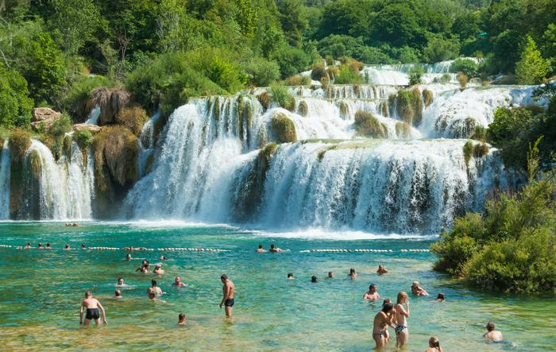
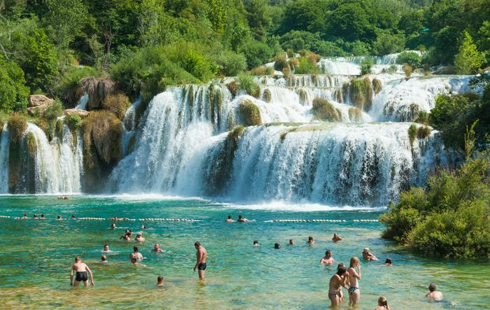

CHORWACJA
 

Przezyj niezapomniana przygode,w slonecznej Chorwacji!!:
55 ze 100 Zbilansuj swoje danie Naleśniki z dżemem (58) 26min Łatwy Kup składniki Recipe Chef Autorem przepisu jest kaziawr Dodaj do My Menu Plan Warianty przepisu / Klasyczny Składniki - 5 porcji + 2 szklanek Mleko 2 Jajko 2 łyżeczek Cukier wanilinowy WINIARY trochę Sól 2 szklanek Mąka 3 łyżek Olej 1 słoik Dżem 0.5 szklanka Woda gazowana Kopiuj . Wartości odżywcze Trudno znaleźć kogoś, kto nie byłby fanem naleśników. Te smakowite placki można podawać na słodko i na słono. Najmłodsi uwielbiają je właśnie w wersji ze słodkimi dodatkami. Możesz je podawać na ciepło i na zimno, z ulubionym dżemem, owocami i cukrem pudrem. Jednak sekretem udanych naleśników zawsze jest doskonałe ciasto. Zacznij od wlania do miski mleka wraz z odrobiną wody gazowanej, która spowoduje, że ciasto będzie bardziej puszyste. Pamiętaj także o jajkach, cukrze wanilinowym WINIARY i soli. Zmiksuj te składniki, a na koniec dodaj przesianą przez sitko mąkę. Kiedy ciasto stanie się gładkie, dodaj odrobinę oleju i jeszcze raz wszystko zmiksuj. Naleśniki najlepiej smażyć na specjalnie przeznaczonej do tego patelni – np. teflonowej o niskich brzegach, choć zwykła także się sprawdzi. Ważne, by zacząć smażenie na rozgrzanej patelni lekko tylko posmarowanej oliwą. Staraj się nalewać na nią tyle ciasta, by wychodziły cienkie placki. Każdy z nich smaż z obu stron. Gotowe naleśniki przekładaj na talerz. Możesz podawać je natychmiast, smarując dżemem i zwijając w rulony, ćwiartki lub w koperty, ale jeśli przygotowałaś większą porcję lub zamierzasz podać naleśniki później, przykryj je talerzem lub folią aluminiową, żeby placki nie wysychały. Udekoruj je cukrem pudrem, lodami albo ulubioną posypką. Pamiętaj, że naleśniki to świetny pomysł nie tylko na deser!